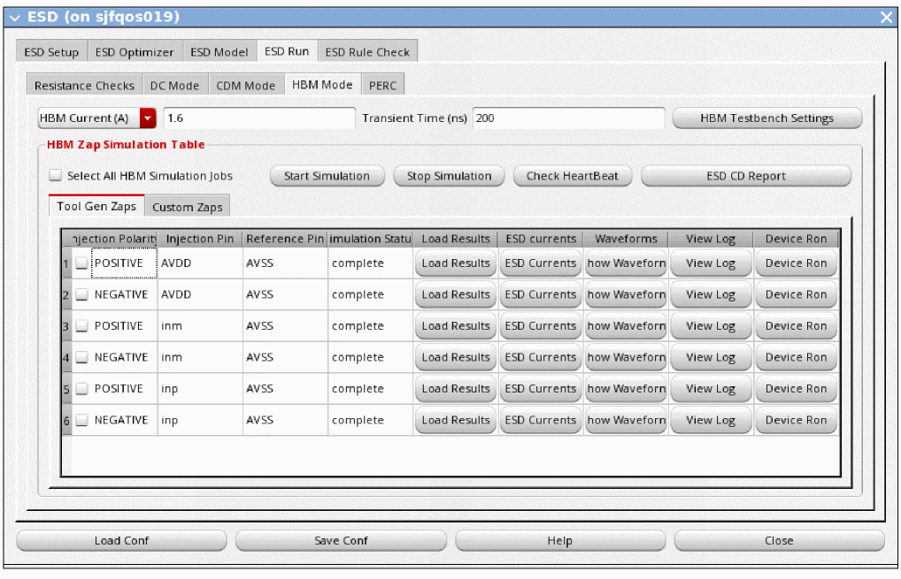

11
ESD Analysis
- Overview
- Specifying ESD Analysis Settings
- xDSPF File Optimization
- xDSPF File Optimization
-
ESD Current Density Checks
- ESD Current Density Checks Flow
- Key Features of ESD Current Density Checks
- Types of Analysis for ESD Current Density Checks
- Prerequisites for ESD Current Density Checks
- ESD Modeling
- Specifying ESD Models
- ESD Testbench
- Specifying ESD Testbench
- ESD Zaps
- Creating Custom ESD Zaps
- Running Current Density Checks
- Rule-Based ESD Checks
- ESD Form Description
Overview
Electrostatic Discharge (ESD) is defined as the transient electric current between two objects at different electrostatic potentials causing an ESD event. Due to shrinking geometries of nanometer designs, devices are at a higher risk to ESD exposure and are prone to damage.
The ESD analysis feature in Voltus-Fi-XL lets you check whether every power or ground pin or bump has an ESD device along the potential ESD paths or not. In addition, you can analyze the device placement to ensure that the device does not violate the effective resistance limit.
Given a set of pins and ESD devices in ESD analysis, you can find the effective resistance between each pin and ESD device pair. The objective of ESD analysis is to identify and highlight the pins that have an effective resistance higher than the specified threshold value. It also checks whether the total effective resistance from a power pin to an ESD device to a ground bump is within the specified threshold value. In addition, static verification using known current density limits is used to analyze the current flow from the pad to the ESD devices.
To prevent an ESD event, you can place the ESD devices or clamps at power/ground pads to provide an efficient discharge path from one pin or bump to another.
Voltus-Fi-XL supports the following checks in ESD analysis in batch mode and GUI:
The following features of ESD analysis are beta features and available only with the VPS_NG100 license:
For more information, contact your Cadence representative.
Specifying ESD Analysis Settings
Before running ESD analysis, you need to specify the settings in the Voltus-Fi GUI. The steps are detailed below.
- Opening ESD Form
- Specifying Mandatory Inputs
- Specifying Optional Inputs
- Loading DSPF File
- Selecting Instances for Analysis
- Specifying Advanced Settings
Opening ESD Form
- In the Voltus-Fi-XL console, choose ESD Analysis – ESD Analysis.
-
Open the ESD Setup tab of the ESD form.
Specifying Mandatory Inputs
- In the ESD Common Setup section, specify the nets in Power Nets, Ground Nets, and Signal Nets.
- Specify a filename for DSPF File.
- Specify the ESD cells in ESD transistors/diodes.
- In the Output Dir box, specify the directory in which the reports generated for ESD analysis will be saved.
- Specify a filename for DFII layer map file.
- Specify a filename for Model File.
- In the qrcTechFile/ICT File box, specify the Quantus technology file or the ICT file that contains the EM limits for ESD current density calculations.
Specifying Optional Inputs
- In the Optional Inputs section, specify a filename for CDL File.
- Specify the ESD CDL cells in CDL Cells.
- In the Common EMIR conf File box, specify the configuration file to be used for all zap simulations.
- Specify a filename for EM Only ICT File.
Loading DSPF File
-
Click Load DSPF to load the DSPF file that is specified in the DSPF File field in the ESD Common Setup group box.
If an optimized xDSPF file is present inside the output directory, Voltus-Fi uses the file for ESD analysis. If an optimized xDSPF file is not present inside the output directory, Voltus-Fi displays a message prompting you to optimize the file. You can either proceed without optimizing the xDSPF file or generate an optimized xDSPF file. It is recommended to generate an optimized xDSPF for faster Spectre simulation.
After the DSPF file is loaded, the DSPF summary window displays the number of nodes, resistors, and ESD instances.
Once the fields in the ESD Setup group box are populated and the DSPF file is loaded, the ESD Instances table lists ESD instances of all ESD macro cells in a tree view.
Selecting Instances for Analysis
You can select instances for effective resistance and current density checks. The ESD Instances table lists ESD instances of all ESD macro cells and all fingers of the listed ESD instances in a tree view.
To select instances for effective resistance and current density checks, do the following:
- Click Select All Instances to select all instances, or click the check boxes corresponding to specific instances.
-
Click Update to update the ESD device instances that are to be processed.
When an instance is selected, all related fingers are highlighted on the layout. You can select a single finger to highlight it in the layout.
Specifying Advanced Settings
With advanced settings, you can specify the number of threads to use for multi-threading, the maximum number of computers to use for distributed processing, or the maximum number of computers and the number of threads to use for superthreading. You can also specify the Spectre simulation settings.
-
Click Advanced Settings in the ESD Setup tab.
The Advanced Settings form opens. - On the Run Settings tab, select Multi CPU from the Simulation Run Mode list.
- Specify a value for Number of Local Processors.
- Click Ok or Apply.
Remote Multithreading, Distributed Processing, and Superthreading
- On the Run Settings tab, select LSF from the Simulation Run Mode list.
-
Specify a value for Remote Hosts.
This value is required for both distributed processing and superthreading. -
Specify a value for CPU’s per Remote Host.
- In the LSF Configuration section, specify any additional arguments you need to provide to the LSF job submission command in the Args box.
- Specify a resource string for the LSF queue in the Resource box.
- Specify a value for Queue for the LSF configuration.
- Specify a value for Timeout.
-
Click Generate.
The Effective Command box shows the effective command string compiled from the values in the LSF Configuration section. This value is used as the submission string to LSF. You can modify this value for custom distributed mode settings. - Click Ok or Apply.
- Open the Simulation Settings tab of the Advanced Settings form.
-
In the Spectre Simulator Options box, specify the Spectre setup simulation file. For example,
highvoltage=yes. -
In the Spectre Command Line Options box, specify the options to be used while invoking Spectre. For example,
+aps +postlayout=hpa. For static DC simulation, you can also add+fastdc. -
In the Spectre Transient Options field, specify the options to be used while running the
transimulation. For example,method=trap. - In the Spectre Threads box, specify the number of threads to be used while running simulation.
- Click Ok or Apply.
Related Topics
xDSPF File Optimization
Voltus-Fi uses the specified full-chip flat xDSPF file and optimizes it for faster Spectre simulation. The optimized xDSPF file consists of all ESD protection devices and nets, parasitics, and all other components that are related to the ESD discharge paths for all input net ports or pins.
After an xDSPF file is optimized, Voltus-Fi automatically runs the SPF Checker utility on the optimized file to ensure that the DSPF file is compatible with the simulation requirements.
Generating Optimized xDSPF File
You can generate an optimized xDSPF file in both batch and GUI modes.
To generate an optimized xDSPF file in batch mode, do the following:
-
Provide information about the
esd_optimizercommand in the command file, which is specified using thevfibatchcommand.vfibatch -cmdcmd-file-name
To generate an optimized xDSPF file in GUI mode, do the following:
- In the ESD Setup tab of the ESD form, specify the ESD analysis settings and load the DSPF file.
-
In the ESD Optimizer tab, click Run Optimizer.
After the optimizer run is complete, click Load DSPF on the ESD Setup tab to use the optimized DSPF file.
ESD Effective Resistance Checks
Effective Resistance Checks Flow
The following diagram illustrates the flow of ESD effective resistance checks in Voltus-Fi-XL:
Key Features of ESD Effective Resistance Checks
The following features are supported for the ESD effective resistance checks in Voltus-Fi-XL:
-
Discarding R-effective of Pin to First ESD Device when Reporting pin-to-pin: The following option of the
analyze_esd_genericcommand is used to discard the effective resistance of the pin to the first ESD for signal nets:-discard_pin_to_first_ESD_for_signal_net {true|false} -
Recognizing ESD Instances in a Circuit: When the ESD-cell is also used for non–ESD purposes, Voltus-Fi falsely recognizes the non-ESD instances as ESD. To avoid this, the following option is provided in the
analyze_esd_genericcommand to let you identify ESD-instances by name:
When the above option is specified, only instances that contain the words, ‘clamp’ or ‘ESD’, in their names are recognized as ESD-instances. The following message is displayed in the Voltus-Fi log file:-esd_instance_name_string “clamp ESD”INFO: All instances that do not contain the following not case-sensitive token-string will be discarded from ESD-analysis.clamp ESD -
Merging Fingers: By default, Voltus-Fi merges fingers for resistance checks. Specify the following option of the
analyze_esd_genericcommand if you do not want to merge fingers:-merge_fingers false -
CDL Processing for ESD Analysis: The CDL ESD cells can be specified in the Voltus-Fi GUI for ESD analysis. You can specify multiple ESD cell names in the Cells field in the CDL group box of the ESD form. Multiple cell names can be specified separated by a space. This input is optional.
Voltus-Fi automatically finds all the leaf-level instances present inside the specified ESD CDL cells. The leaf-level instances present inside the CDL cells are matched inside the DSPF and used for ESD analysis. For example, you have specifiedESD_cell1andESD_cell2in the schematic CDL netlist. The figures below show the top-level circuit before and after the CDL cells are processed.
Top-Level Circuit before CDL ProcessingTop-Level Circuit after CDL Processing
Prerequisites for Effective Resistance Checks
The following table lists the required inputs for running effective resistance checks in Voltus-Fi-XL.
Running Effective Resistance Checks
You can run effective resistance checks in both batch and GUI modes.
To run effective resistance checks in batch mode, do the following:
-
Provide information about the
analyze_esd_genericcommand in the command file, which is specified using thevfibatchcommand.vfibatch -cmdcmd-file-name
To run effective resistance checks in GUI mode, do the following:
- In the ESD Setup tab of the ESD form, specify the ESD analysis settings and load the DSPF file.
-
Open the ESD Run tab.
- Click the Resistance Checks tab.
-
Specify the threshold values for Pin-to-Pin Threshold and Pin-to-Clamp Threshold.
The Pin-to-Clamp resistance check threshold value is also applicable for the Clamp-to-Clamp resistance check. By default, the threshold value is set to10 Ohms. - Select Finger Merge to merge the MOS fingers in the resistance check reports. This option is selected by default.
- Select Split Pins Shorting to short the split pins.
-
Click Run R-effective Checks to run the effective resistance checks.
The table is populated with the reports for the different resistance checks. You can click an ESD device in the table to view all its descendants in the layout window as fly-lines. The following figure shows all the fly-lines for the effective resistance of the ESD device selected in the table. The green fly-lines indicate “pass” while the red fly-lines indicate a “fail” status.You can also click a pin in the table to view the fly-line for that specific pin to the ESD point.
Related Topics
ESD Current Density Checks
ESD Current Density Checks Flow
The following diagram illustrates the high-level flow of ESD current density checks in Voltus-Fi-XL:
Key Features of ESD Current Density Checks
The following features are supported for the ESD current density (CD) checks in Voltus-Fi-XL:
- Common EMIR Configuration File: An option is provided to specify a common configuration (conf) file to be used for all zap simulations. This configuration file contains common settings, for example, geo-unit.
-
CDL Processing for ESD Analysis: The CDL ESD cells can be specified in the Voltus-Fi GUI for ESD analysis. You can specify multiple ESD cell names in the Cells field in the CDL group box of the ESD form. Multiple cell names can be specified separated by a space. This input is optional.
Voltus-Fi automatically finds all the leaf-level instances present inside the specified ESD CDL cells. The leaf-level instances present inside the CDL cells are matched inside the DSPF and used for ESD analysis. For example, you have specified
ESD_cell1andESD_cell2in the schematic CDL netlist. The figures below show the top-level circuit before and after the CDL cells are processed.
Top-Level Circuit before CDL ProcessingTop-Level Circuit after CDL Processing
- Waveform Analysis: Voltus-Fi GUI supports waveform analysis when dynamic ESD zap simulation is run. The waveform display is provided using the layout window of the Virtuoso Visualization and Analysis XL software.
Types of Analysis for ESD Current Density Checks
There are different types of ESD analyses for current density checks as per the industry standards. Voltus-FI supports static and dynamic ESD analyses.
- Static ESD Analysis: It uses the DC simulation models for current density checks.
-
Dynamic ESD Analysis: It can be either human body model (HBM) or charged device model (CDM). While running ESD analysis, Voltus-Fi-XL creates an input stimulus that is injected into the pin of the circuit. The nature of the input stimulus is similar to an actual ESD event that occurs in a real-life event.
The figure below shows the overview model of creating a stimulus and injecting into the pin for dynamic ESD analysis.
The testbench creates a stimulus that models the HBM or CDM event. -
HBM ESD Analysis: The human body model (HBM) analysis captures the ESD event in the pin of an IC occurring from the human touch, such as touching with a finger. The figure below shows the characteristic of the input stimulus that occurs in the circuit pin. The peak current in this event is a few amperes (A). The rise time is less than 10ns and the decay time is approximately 150ns. Voltus-Fi creates an HBM stimulus internally using an RLC circuit.
-
CDM ESD Analysis: The charged device (CDM) model captures the ESD event that occurs when a chip is mounted during assembly and manufacturing. For example, a package may be inductively charged up when it is transported along a conveyor belt. Then the discharge may happen when a pin comes in contact with any metal. The figure below shows the characteristic of the input stimulus. The CDM event is known to produce a spike of currents, in the range of peak
50A, and have a sub-nanosecond rise and decay time.
The CDM events are generated when the package is inductively charged up, therefore, it is important that this testing model should include the substrate network in effect during simulation. The CDM testbench created by Voltus-Fi automatically takes into account the substrate network to inject high current into the circuit.
It is also important to capture package parameters in CDM analysis. The testbench contains package RLC parameters. Voltus-Fi lets you control several characteristics of the stimulus such as peak current, transient period, package effect, and so on. Voltus-Fi can internally generate CDM stimulus to a circuit.
Prerequisites for ESD Current Density Checks
The following table lists the required inputs for performing ESD current density checks in Voltus-Fi-XL.
Setting Quantus for xDSPF Generation
For ESD analysis, while performing extraction in the batch mode, ensure that the -reduction option of the extract_xdspf command is set to false. This disables the reduce_i_cards option in the CCL file while generating the xDSPF file.
While performing extraction in the GUI mode, ensure that the Reduce I-Cards option is disabled. This disables the reduce_i_cards option in the CCL file.
This is done because if a net is “capacitance only”, it is qualified for reduced I card or instance card treatment. If the reduce_i_cards option is set to true, the instance cards and their corresponding dummy resistors are not printed in the results.
Figure 11-1 Placing ESD Devices for ESD Protection
The current density check flow can be summarized in the following manner:
- The ESD intended paths for each ESD event (zap) are simulated.
- The results for each zap are displayed.
- The current values at all ESD instances are reported by Voltus-Fi-XL.
- EM analysis can be performed for ESD current paths for every ESD event.
ESD Modeling
Transmission Line Pulse (TLP) modeling is required for running current density checks. The following types of modeling of ESD devices are supported in Voltus-Fi:
- Spectre/Spice Models: This mode is used in both static and dynamic ESD analysis. In this mode, Voltus-Fi does not generate any ESD models. It uses the ESD models present in the models library specified for simulation. These may be general Spice models.
-
Vt, Ron, Roff Parameter Models: This mode is used in DC simulation mode (static ESD analysis). In this mode, Voltus-Fi generates ESD models for MOS and diode devices based on the following parameters:
Ron+ Ron-: On-resistance voltage
Roff+ Roff-: Off-resistance voltage
Vt1+Vt1-: Trigger voltage
The diagrams below provide details about how the ESD models are generated for two- and three-terminal devices:
Two-Terminal Diode ESD Device
Three-Terminal ESD Device -
TLP-IV Models: This mode is used in CDM and HBM simulation modes (dynamic ESD analysis). In this mode, Voltus-Fi generates ESD models for MOS and diode devices based on the snapback IV (current voltage) parameters defined in the model data file.
In this type of modeling, there are two options:-
Models generated using user-provided IV data: If IV data is present for ESD devices, specify it in the TLP IV Model File field and click Load Cell IV Data from File.
The TLP data file format is as follows:DeviceName IV={[L/W/Area] I1,V1 I2,V2 I3,V3 …}
<ESD MOS name> mos IV=(L=1e-05; W=2e-05; 0.00025,1.25; 0.00035,1.215; 0.005,1.2325; )
<ESD Diode Name> pdiode/ndiode IV=(Area=1e-05; 0.00025,1.25; 0.00035,1.215; 0.005,1.2325; )
Each line specifies the MOS or diode name (pdiode/ndiode) along with the IV data. In addition to specifying the IV data, you can also optionally specify theL(Length),W(Width), andA(Area).
Voltus-Fi supports linear scaling of the IV data (current values). When a device is instantiated during the Spectre simulation, the current scaling feature allows you to scale the current values provided in the TLP data file.
The IV data scaling for MOS is based onW(width), and for diode is based onA(area). L does not affect the current change. Depending on theWvalue for ESD protection clamps/MOS devices and theAvalue for ESD protection diode devices, the current values provided in TLP IV parameters are linearly scaled based on the ratio of:-
Scale factor for Clamps/ MOS = (
Wof device in DSPF)/ (Wof device in TLP IV File) -
Scale factor for Diodes = (
Aof diode in DSPF)/ (Aof diode in TLP IV File)
An example of IV data scaling is as follows:
Following are the IV parameters specified in the TLP IV file:nch_18_mac IV=(L=0.18 W=300; 0,0 0.01,2 0.02,3 0.03,4 0.1,2.5 0.5,3 1.2,3.5)
Diode_18 IV=(Area=100; 0,0 0.2,1 0.5,2 0.8,3 1.1,4)
Depending on theWandAof devices in DSPF, the current values will be scaled to:nch_18_mac IV=(L=0.18 W=600; 0,0 0.02,2 0.04,3 0.06,4 0.2,2.5 1,3 2.4,3.5)
Diode_18 IV=(Area=50; 0,0 0.1,1 0.25,2 0.4,3 0.55,4)
-
Scale factor for Clamps/ MOS = (
- Models generated using no IV data: If no IV data is present for ESD devices, ensure that TLP-IV Models is selected in the Model Type drop-down and leave the above TLP IV Model File field empty. Voltus-Fi will use heuristics to generate models for the ESD device.
-
Models generated using user-provided IV data: If IV data is present for ESD devices, specify it in the TLP IV Model File field and click Load Cell IV Data from File.
Specifying ESD Models
To specify a model type for ESD analysis, do the following:
ESD Testbench
Testbench specification is needed when you run current density checks for the CDM and HBM simulation modes (dynamic ESD analysis). The testbench consists of resistance, inductance, and capacitance (RLC) circuits that create a stimulus in the zap pins for CDM and HBM circuit testing. In Voltus-Fi GUI, you can specify either an in-house testbench or a tool-generated testbench for ESD analysis.
- Tool-Generated Testbench: Voltus-Fi generates a testbench for CDM and HBM analysis. The RLC circuit of the testbench generates a stimulus to the input zap pin. You can change the nature of the stimulus waveform by changing the RLC values in the testbench circuit.
- In-House Testbench: You can specify an in-house testbench if you do not want to use the Voltus-Fi-generated HBM or CDM testbench.
Specifying ESD Testbench
You can specify either an in-house testbench or a tool-generated testbench for CDM and HBM analysis.
Specifying In-House Testbench
To specify an in-house testbench, do the following:
- Open the ESD Run tab of the ESD form.
- Click any of the tabs: CDM Mode or HBM Mode.
-
Click CDM Testbench Settings or HBM Testbench Settings.
The Testbench Settings form opens. - Select Load In-House Testbench.
- Select an option from the Testbench Format list.
- Specify a value in the TestBench File box.
- Click Ok or Apply.
Specifying Tool-Generated Testbench
To specify a tool-generated testbench, do the following:
- Open the ESD Run tab of the ESD form.
- Click any of the tabs: CDM Mode or HBM Mode.
-
Click CDM Testbench Settings or HBM Testbench Settings.
The Testbench Settings form opens. - Select Load Tool Generated Testbench.
-
Specify values for the following or click Defaults to enter the default values:
CDM Mode: LO (inductance), RO (resistance), CO (capacitance), and C1 (substrate effect)
HBM Mode: RO (resistance), R1 (resistance), and CO (capacitance)
Alternatively, specify a value in the Load from File box to load values of the above parameters from a file. - Click Ok or Apply.
ESD Zaps
In Voltus-Fi GUI, the Zap Simulation Table displays zap details for current density checks. Each row in the table specifies a zap and displays information about the polarity of the injection current (positive or negative), the name of the static current injection pin, the reference ground pin, and the simulation status.
There are two options for adding zaps in the GUI: tool-generated zaps and custom zaps.
These zaps are generated by default. They are created from the power nets, ground nets, and signal nets specified in the ESD Setup tab. The table in the Tool Gen Zaps tab is automatically populated with information of all zaps.
You can add custom zaps in the table by specifying their current/voltage polarity, the injection pin, and reference pin information. This option is used in the following scenarios:
- To short multiple injection and reference pins in one zap during simulation.
- To perform ESD checks on a pair of injection and reference pins that are not generated by default.
Creating Custom ESD Zaps
You must specify the custom zaps and then load the DSPF file again to save the changes. To create custom zaps, do the following:
- Open the ESD Run tab of the ESD form.
- Click any of the tabs: DC Mode, CDM Mode, or HBM Mode.
-
In the Zap Simulation Table, click Custom Zaps.
-
Click the Add Row (
+)button.
A row is added to the table. - Specify a value in the Injection Polarity column: POSITIVE or NEGATIVE.
-
Specify values in the Injection Pin (static current injection pin) and Reference Pin (reference ground pin) columns.
You can specify multiple pins separated by a space. Wildcards are not supported. When multiple pins are specified as either injection or reference, these pins are shorted internally during simulation. - On the ESD Setup tab, click Load DSPF to create a zap using these inputs. The inputs are saved.
Running Current Density Checks
The ESD Analysis GUI in Voltus-Fi-XL lets you set up the ESD current density analysis, specify the ESD devices, select the ESD instances, select the simulation job, and view the ESD current density reports. The GUI provides the following features to analyze currents:
There are two use models for current density checks in the GUI. The first, in which Spice models are provided and the second, in which the Spice models are not provided. In the latter case, the tool generates TLP models for ESD analysis.
The high-level GUI flow for ESD current density checks for the two use models is detailed in the flow diagram below.
Figure 11-2 ESD Current Density Checks Flow in Voltus-Fi-XL GUI
You can run current density checks in both batch and GUI modes.
To run current density checks in batch mode, do the following:
-
Provide information about the
analyze_esd_current_densitycommand in the command file, which is specified using thevfibatchcommand.vfibatch -cmdcmd-file-name
In GUI mode, you can run current density checks for the following: DC simulation mode (static ESD analysis), CDM and HBM simulation modes (dynamic ESD analysis), and PERC. The steps are detailed below.
Running Current Density Checks for DC Mode
To run current density checks for the DC simulation mode, do the following:
- In the ESD Setup tab of the ESD form, specify the ESD analysis settings and load the DSPF file.
- On ESD Model tab, select Static ESD Device Models.
- Select an option from the Model Type list: Spectre/Spice Models or Vt/Ron/Roff Models.
-
Open the ESD Run tab.
- Click the DC Mode tab.
-
Specify whether simulation should be run by creating voltage source or injecting current by selecting the DC Voltage (V) or DC Current (A) options, respectively. The default voltage is
200 Voltsand the default current is6 Ampere. - In the DC Zap Simulation Table, specify the zaps for simulation. Either select the tool-generated zaps or create custom zaps.
- Click Start Simulation.
Running Current Density Checks for CDM Mode
To run current density checks for the CDM simulation mode, do the following:
- In the ESD Setup tab of the ESD form, specify the ESD analysis settings and load the DSPF file.
- On ESD Model tab, select Dynamic ESD Device Models.
- Select an option from the Model Type list: Spectre/Spice Models or Vt/Ron/Roff Models.
-
Open the ESD Run tab.
- Click the CDM Mode tab.
-
Specify whether simulation should be run by creating voltage source or injecting current by selecting the CDM Voltage (V) or CDM Current (A) options, respectively. The default voltage is
300 Voltsand the default current is6 Ampere. - Specify a value in nanosecond (ns) for Transient Time.
- Click CDM Testbench Settings to specify a testbench.
- In the CDM Zap Simulation Table, specify the zaps for simulation. Either select the tool-generated zaps or create custom zaps.
- Click Start Simulation.
Running Current Density Checks for HBM Mode
To run current density checks for the HBM simulation mode, do the following:
- In the ESD Setup tab of the ESD form, specify the ESD analysis settings and load the DSPF file.
- On ESD Model tab, select Dynamic ESD Device Models.
- Select an option from the Model Type list: Spectre/Spice Models or Vt/Ron/Roff Models.
-
Open the ESD Run tab.
- Click the HBM Mode tab.
-
Specify whether simulation should be run by creating voltage source or injecting current by selecting the HBM Voltage (V) or HBM Current (A) options, respectively. The default voltage is
2000 Voltsand the default current is1.6 Ampere. - Specify a value in nanosecond (ns) for Transient Time.
- Click HBM Testbench Settings to specify a testbench.
- In the HBM Zap Simulation Table, specify the zaps for simulation. Either select the tool-generated zaps or create custom zaps.
- Click Start Simulation.
PERC – Programmable Electrical Rule Check (PERC) Interface
Click Launch PERC to launch the Cadence® PegasusTM or PVS PERC (Programmable Electrical Rule Check) interface.
- Device connectivity
- Device property
- Design hierarchy
- User-defined grouping of the nets by net-tag or voltage attribute
You can run Pegasus or PVS PERC on the schematic or layout design. For details, see the “Running PERC” chapter in the Pegasus Interactive User Guide or Virtuoso IPVS User Guide.
Performing Simulation
Once all the information for the zaps is provided, you can perform the simulation as follows:
- Select Start Simulation to start the simulation for a specific zap. The zap is selected in the table. The simulation runs in the background.
-
Select Check HeartBeat to check the status of the simulation being performed. A pop-up window named, Simulation status, opens. Once the simulation is complete, the Simulation Status column in the table shows the status as completed.
Figure 11-3 Checking the Simulation Status - Click Stop Simulation to stop the simulation for all the zaps running in the background.
-
Click Select or Deselect All Simulation jobs to simulate ESD events for all or selected power/ground/signal-PAD zap combinations. By default, all combinations are selected.
Figure 11-4 Deselecting All Simulation Jobs - Click ESD CD Report to view the ESD current density pass/fail report for all instances. For details about the report format and a sample report, see Current Density Check Reports.
For each zap, you can perform the following actions using the buttons provided in the table:
- Loading the Simulation Results
- Viewing the ESD Current Reports
- Viewing Waveforms for Dynamic Simulation
- Viewing the Simulation Log Information
- Viewing the Device Ron Information
Loading the Simulation Results
Click Load Results to load the results of the simulation in Voltus-Fi-XL. When you click this option, the EM tab of the IR/EM Results form opens.
Figure 11-5 Loading the Results in Voltus-Fi-XL
Viewing the ESD Current Reports
Click ESD Currents to view the report for the ESD currents of all ESD instances for the specific zap. This report shows the peak current through each terminal of the ESD instances on the simulated net.
Figure 11-6 Sample Current Report for ESD Terminal
Viewing Waveforms for Dynamic Simulation
Click Show Waveform to view the waveforms for the dynamic zap simulation. The waveform opens in Virtuoso® Visualization and Analysis XL.
Figure 11-7 Viewing the Waveform for Dynamic Simulation Analysis

Viewing the Simulation Log Information
Click View Log to view the simulation log file while the simulation is running.
Figure 11-8 Viewing the Log File
Viewing the Device Ron Information
Click Device Ron to view the ESD Device Ron pop-up window. The device Ron report is generated using the DC mode. This window displays the name of the Trigger pin, Reference pin, Total R and the Polarity. Clicking on any instance in this window, highlights the instance on the layout. Click Save to save the report in a text file.
Figure 11-9 Viewing the Device Ron Report
Rule-Based ESD Checks
Voltus-Fi performs rule-based resistance and current density checks. You can specify the rules for computing effective resistance and performing current density or EM analysis in a single rule file. Voltus-Fi runs resistance and current density checks on the specified nets and clamps for the rules specified in the rule file, and generates a pass/fail summary report and a detailed report for each rule. In this flow, extraction is run only once for all methods, thereby saving time and memory.
Voltus-Fi performs the following types of ESD checks:
- Pin-to-clamp: Effective resistance is computed from a pin to all clamps or ESD devices.
- Clamp-to-clamp: Effective resistance is computed between all clamps for each net.
- EM: Current density checks are performed for the DC Simulation model using current value as the input stimulus.
ESD Rule File
The following section lists the syntax of an ESD rule file, parameters of the rule file, and examples of different rule types.
The rule syntax is not case-sensitive. The syntax of the rule file is:
The following are examples of different rule types.
Running Rule-Based ESD Checks
To run rule-based checks in batch mode, do the following:
-
Provide information about the
analyze_esd_networkcommand in the command file, which is specified using thevfibatchcommand.vfibatch -cmdcmd-file-name
To run rule-based checks in GUI mode, do the following:
- In the ESD Setup tab of the ESD form, specify the ESD analysis settings and load the DSPF file.
-
Click the ESD Rule Check tab.
- Specify a rule file. Either type the file name in the Rule File field or click the Browse button to select a file. Use the Edit button to edit the file.
- Click Load to load rules from the rule file.
- Select Finger Merge to merge the MOS fingers in the resistance check reports. This option is selected by default.
- In the Rule Database group box, select the rules to be run.
- Click Run Rules.
Batch Mode Support for ESD Analysis
This section includes the following topics:
- Batch Mode Support for Effective Resistance Checks
- Batch Mode Support for Current Density Checks
- Batch Mode Support for Rule-Based Checks
Batch Mode Support for Effective Resistance Checks
In batch mode, the resistance checks are performed using the analyze_esd_generic command. This command reports the effective resistance from the power/ ground pins and signal nets to the nearest ESD device.
The syntax of the command is provided below.
analyze_esd_generic
-power_nets {pwr_net_names}
-ground_nets {gnd_net_names}
-signal_nets {signal_net_names}
-pgpin2clamp_threshold threshold_value
-loop_threshold threshold_value
-target_models {model_name_1 ron_1 model_name_2 ron_2…}
-dspf_file filename
-tech_file file_name
-output_dir dir_name
-discard_pin_to_first_ESD_for_signal_net {true|false}
-esd_instance_name_string {instance_names}
-merge_fingers {true | false}
-cdl_file file_name
For details of the syntax and examples of the command, see analyze_esd_generic in the “Batch Mode Execution” chapter.
Batch Mode Support for Current Density Checks
The current density checks are performed using batch mode command, analyze_esd_current_density. This command reports the current values at all ESD instances.
The syntax of the command is provided below.
analyze_esd_current_density -esd_conf_fileconf_filename-run_async {true | false} -simulation_mode {DC CDM HBM}-zap_injection_current_polarity {positive | negative} -zap_injection_pinslist_of_pins-zap_injection_reference_pinslist_of_pins -use_remote_machines_as_many_zaps {true | false}
For details of the above command, see in the “Batch Mode Execution” chapter.
Batch Mode Support for Rule-Based Checks
Rule-based ESD checks are performed using the batch mode command, analyze_esd_network. This command performs resistance and current density checks based on the set of rules defined in the rule file.
The syntax of the command is provided below.
analyze_esd_network
-power_nets {pwr_net_names}
-ground_nets {gnd_net_names}
-signal_nets {signal_net_names}
-target_models {model_name_1 ron_1 model_name_2 ron_2…}
-dspf_file filename
-output_dir dir_name
-merge_fingers {true | false}]
-tech_file file_name
-discard_pin_to_first_ESD_for_signal_net {true | false}
-rule_file file_name
-model_file file_name
-dfIIlayermap_file file_name
For details of the syntax and examples of the command, see the analyze_esd_network command in the “Batch Mode Execution” chapter.
The following data for the ESD analysis is read from the ESD conf file specified using the analyze_esd_generic command:
-
The power/ground/signal nets: The
-power_nets,-ground_nets, and-signal_netsoptions specify the names of the power/ground/signal nets for which the ESD current density check is to be performed. For details, see Specifying the Power/Ground/Signal Nets. -
DSPF file: The
-dspf_fileoption specifies the name of the DSPF file that is generated using Quantus. This file contains information about model names, including the ESD model names required for the ESD analysis -
Technology file: The
-tech_fileoption specifies the technology file containing the EM limits for ESD validation. -
Model file: The
-model_fileoption specifies the Spice model file that contains references to all the Spice models required to simulate the DSPF circuit. -
Output directory: The
-output_diroption specifies the name of the output directory in which the reports generated for the ESD analysis are written.
Specifying the Power/Ground/Signal Nets
For the following three options, -power_nets, -ground_nets, and -signal_nets options, keep the following in mind:
- The options support wild-card UNIX style naming.
- If a specified net name is not present in the DSPF, the net name is ignored and no zap combinations are generated for the missing net. Also, if a pin is present in the input DSPF file and is not specified using these three options, Voltus-Fi displays a message listing the missing pins that are not being ESD analyzed.
- For all three options, pins can be specified using the standard regular UNIX style expressions. For example, specify ‘*’ to specify all pins for an option. While using regular expression, it is possible that after regular expressions (regex) are resolved, the same pins appear in more than one of the three options. In such cases, preference is given in the following order; power, ground, and then signal. This ensures that after regex resolution, the same pin does not appear in more than one option.
For example, if you specify ‘*’ for all three options; -power_nets, -ground_nets, and -signal_nets, then all pins will be considered as power-pins.
Using Distributed Processing in Voltus-Fi-XL
The computation of resistance and current density checks is CPU-intensive. Voltus-Fi supports distributed processing to perform these checks.
Use the following commands to set up the ESD current-density distributed processing:
-
To set up a run with multiple processes on the same machine, use the following command:
setMultiCpuUsage -localCpu 10
The above command will set up the ESD-CD to run ten jobs in parallel. -
To set up a run with multiple processes in LSF (Load Sharing Facility), use the following set of commands:
setMultiCpuUsage -localCpu 10 -remoteHost 2
setDistributeHost -lsf -queue vormetric -args {-P lnx64} -resource {OSREL==EE50}
The above commands will set up the ESD-CD to run two jobs in parallel in the LSF farm as per the queue and other specifications provided using thesetDistributeHostcommand.
For detailed information about the above commands, see analyze_esd_generic in the “Batch Mode Execution” chapter.
Outputs of ESD Analysis
The following reports are generated for ESD Analysis in Voltus-Fi-XL:
Effective Resistance Check Reports
The following reports are generated for effective resistance checks:
The report formats and samples are provided below.
The Pin to Clamp Report
In this report, the effective resistance is reported for each pin and all ESD devices.
Sample filename: pin2clamp.rpt
Net name
Node Name Reffective Pass/Fail
ESD Macro Device
Net Name specifies the net names for the terminals/nodes for which the effective resistance is being reported.
Node Name specifies the terminal names of the ESD device.
Reffective specifies the effective resistance of the terminal.
Pass/Fail specifies the status of the terminal – a pass status is given when the effective resistance of the terminal is below the specified threshold value and a fail status is given when the effective resistance of the terminal is above the specified threshold value.
ESD Macro Device specifies the name of the ESD device for which the effective resistance is being reported.
A part of a sample report is shown below.
Figure 11-10 The Pin-to-Clamp Sample Report
The Clamp-to-Clamp Report
In this report, the effective resistance is reported between two clamps for every net.
Sample filename: clamp2clamp.rpt
Net name
Clamp_terminal Reffective Pass/Fail
Clamp:
Net Name specifies the net name for the terminals for which the effective resistance is being reported.
Clamp-terminal lists the names of all terminals to which Reffective is reported.
Reffective specifies the effective resistance of the terminal.
Pass/Fail specifies the status of the terminal - a pass status is given when the effective resistance of the terminal is below the specified threshold value and a fail status is given when the effective resistance of the terminal is above the specified threshold value.
Clamp specifies the name of the clamp terminal from which the effective resistance is being reported.
Figure 11-11 The Clamp-to-Clamp Sample Report
The Pin-to-Pin Report
In this report, the total effective resistance is reported for all the paths, from the power pin to the ESD device to the ground pin.
Net name
Effective Resistance to Ground Net
pin-ESD-reff ESD-terminal ESD-ESD-reff ESD-terminal ESD-pin-reff total-reff
--------------------
Pin1
Pin2
--------------------
Net Name specifies the net name for terminals for which the effective resistance is being reported.
Effective Resistance to Ground Net specifies the total effective resistance from the power/signal pin to the ground pin.
pin-ESD-reff specifies the effective resistance between the power pin and the ESD device.
ESD-terminal specifies the name of the ESD terminal.
ESD-ESD-reff specifies the effective resistance of the terminal.
ESD-pin-reff specifies the effective resistance between the terminal and the ground pin.
total-reff specifies the total effective resistance from the power pin to ESD to ground pin.
Pin1 specifies the “from” pin.
The table below the pins shows all paths from Pin1 to Pin2.
Figure 11-12 Pin-to-Pin Sample Report
Current Density Check Reports
Voltus-Fi supports current density checks for ESD analysis in the GUI and in batch mode. The format and example of the report generated by Voltus-Fi-XL for this check is provided below.
Sample filename: ESD_consolidated_report.rpt
Trigger pin: DVDD
Reference pin: DVSS
Polarity: POSITIVE
COMPLETE
FAIL
NET “DVDD”
%failed resistor layer current width pathLength density limit needed width/#via X1 Y1 X2 Y2 resistance
Trigger pin specifies the pin where the HBM/CDM static current is applied.
Reference pin specifies the ground pin through which the current is discharged.
Polarity specifies the polarity (+ or -) of the current.
%failed specifies the number of resistors that failed the EM check.
resistor specifies the name of the resistor that failed the EM check.
layer specifies the layer on which the failed resistor is located.
current specifies the current flowing through the failed resistor.
width specifies the width of the failed resistor.
pathLength specifies the Blech length of the failed resistor.
density limit needed specifies the current density threshold value, which is required to pass the EM check.
width/#via specifies the ratio of the resistor width to the number of vias.
X1, Y1, X2, Y2 specify the location of the resistor.
resistance specifies the resistance value in Ohms.
A part of the sample report is shown below.
Figure 11-13 The ESD Current Density Sample Report
Rule-Based Check Reports
The following reports are generated for rule-based ESD checks:
- The Clamp-to-Clamp Rule Report
- The Pin-to-Clamp Rule Report
- Current Density Check Rule Report
- Summary Report
The Clamp-to-Clamp Rule Report
In this report, the effective resistance is reported between two clamps for every net.
Sample filename: c2c_rule1.reff
#<clamp cell> <x y (um)> <pin> <layer> <clamp instance>
#- <pass/fail> <R ohm> <threshold ohm> <clamp cell> <x y (um)> <pin> <layer> <clamp instance>
clamp cell specifies the from-clamp cell name.
x y specifies the location of the from-clamp cell.
pin specifies the name of the ESD pin of the from-clamp cell.
layer specifies the metal layer of the ESD pin of the from-clamp cell.
clamp instance specifies the name of the clamp instance.
pass/fail specifies the status of the to-clamp instance - a pass status is given when the clamp-to-clamp effective resistance is below the specified threshold value and a fail status is given when the effective resistance is above the specified threshold value.
R ohm specifies the clamp-to-clamp effective resistance.
threshold ohm specifies the minimum allowed effective resistance between the from-clamp and to-clamp cells.
clamp cell specifies the to-clamp cell name.
x y specifies the location of the to-clamp cell.
pin specifies the name of the ESD pin of the to-clamp cell.
layer specifies the metal layer of the ESD pin of the to-clamp cell.
clamp instance specifies the name of the to-clamp instance.
A part of a sample report is shown below.
Figure 11-14 The Clamp-to-Clamp Rule Sample Report
The Pin-to-Clamp Rule Report
In this report, the effective resistance is reported for each pin and all ESD devices.
Sample filename: p2c_rule1.reff
#Reporting from pin to clamp
#<pin> <x y (um)> <layer>
#- <pass/fail> <R ohm> <threshold ohm> <clamp cell> <x y (um)> <pin> <layer> <clamp instance>
#Reporting from clamp to pin
#<clamp cell> <x y (um)> <pin> <layer> <clamp instance>
#- <pass/fail> <R ohm> <threshold ohm> <x y (um)> <layer> <bump>
If the effective resistance is computed from pin to clamp:
x y specifies the location of the pin.
layer specifies the metal layer on which the pin is located.
pass/fail specifies the status of the clamp instance - a pass status is given when the pin-to-clamp effective resistance is below the specified threshold value and a fail status is given when the effective resistance is above the specified threshold value.
R ohm specifies the pin-to-clamp effective resistance.
threshold ohm specifies the minimum allowed effective resistance between a power or ground pin and an ESD device pair.
clamp cell specifies the name of the ESD clamp cell.
x y specifies the location of the clamp cell pin node. If there are multiple nodes on the pin and are shorted, this is the location of the shorted pin.
pin specifies the name of the ESD pin.
layer specifies the metal layer of the pin whose x,y location is given.
clamp instance specifies the name of the ESD clamp instance.
If the effective resistance is computed from clamp to pin:
clamp cell specifies the from-clamp cell name.
x y specifies the location of the from-clamp cell.
pin specifies the name of the ESD pin of the from-clamp cell.
layer specifies the metal layer of the ESD pin of the from-clamp cell.
clamp instance specifies the name of the clamp instance.
pass/fail specifies the status of the pin instance - a pass status is given when the clamp-to-pin effective resistance is below the specified threshold value and a fail status is given when the effective resistance is above the specified threshold value.
R ohm specifies the clamp-to-pin effective resistance.
threshold ohm specifies the minimum allowed effective resistance between the from-clamp and to-pin cells.
x y specifies the location of the to-pin cell.
layer specifies the metal layer of the ESD pin of the to-pin cell.
A part of a sample report is shown below.
Figure 11-15 The Pin-to-Clamp Rule Sample Report
Current Density Check Rule Report
Sample filename: VDD.rj.avg.rpt
I/Ilimit I(mA) Ilimit(mA) Layer Location Length(um) Width(um) ViaArea(um^2) Via Cuts Fix Width/Via Benefit Factor J(A/cm^2) Jmax(A/cm^2) Resistor Id
I(mA) specifies the current value that flows through the metal or via resistor and which is calculated by the tool.
Ilimit(mA) specifies the current limit value that is provided by the foundry depending upon its width and thickness.
Layer specifies the metal or via layer name on which the resistor is located.
Location specifies the coordinates of the resistor.
Length specifies the length of the resistor.
Width specifies the width of the resistor.
Via Area is the drawn dimension via area in square microns.
Via Cuts is the number of via cuts.
Fix Width/ Via The Fix Width/Via is recalculated by modifying the existing via width to eliminate EM violation. If I/Ilimit is greater than 1, which is a violation, Fix Width/Via will be violation * via width
Benefit Factor When certain constraints are met, its EM limit can be 2X, 3X, or multiple X of the base EM limit. These multiples are called Benefit Factor.
J(A/cm^2) is the current density value.
Jmax(A/cm^2) is the current density limit.
Resistor Id is the unique ID assigned to a resistor.
A part of a sample report is shown below.
Figure 11-16 Current Density Check Rule Sample Report
Summary Report
The summary report summarizes the PASS/FAIL status of each rule with rule details. This report allows you to assess the ESD impact on the design before referring to the individual detailed reports.
The following are snippets of the summary report:
-
Clamp-to-Clamp Rule
Statusspecifies the PASSED, FAILED, or ERROR status of the rule. It will have the status PASSED if all the nets under this rule pass, and will have the status FAILED if even one net fails. The ERROR status is displayed if an error occurs during the run of the rules.
Netspecifies the nets analyzed under this rule.
Typespecifies the type of the net being analyzed.
FromClampsspecifies the number of clamps analyzed under the from section of the rule on each net.
ToClampsspecifies the number of clamps analyzed under the to section of the rule on each net.
Total Pathsspecifies the number of paths analyzed. If from and to clamps are of the same clamp type, total paths =#FromClamps * (#Toclamps – 1). If from and to are not of same clamp type, total paths =#Fromclamps * #Toclamps.
Statusspecifies the status of each net.
MinResspecifies the minimum resistance value for each net.
MaxResspecifies the maximum resistance value for each net. -
Pin-to-Clamp Rule
Statusspecifies the PASSED, FAILED, or ERROR status of the rule. It will have the status PASSED if all the nets under this rule pass, and will have the status FAILED if even one net fails. The ERROR status is displayed if an error occurs during the run of the rules.
Netspecifies the nets analyzed under this rule.
Typespecifies the type of the net being analyzed.
Clampsspecifies clamp cells on each net.
Pinsspecifies pins on each net.
Shortspecifies if pins were shorted.
Total Pathsspecifies the number of paths analyzed. If pins are shorted, total paths is equal to the number of clamps. If pins are not shorted, total paths is equal to#Pins * #Clamps.
Statusspecifies the status of each net.
MinResspecifies the minimum resistance value for each net.
MaxResspecifies the maximum resistance value for each net. -
Current Density Check Rule
Statusspecifies the PASSED, FAILED, or ERROR status of the rule. It will have the status PASSED if all the nets under this rule pass, and will have the status FAILED if even one net fails. The ERROR status is displayed if an error occurs during the run of the rules.
Domain Statusspecifies the status of the domain.
Netspecifies the nets analyzed under this rule.
Typespecifies the type of the net being analyzed.
Thresholdspecifies the effective resistance values that are greater than the specified threshold value.
Violationsspecifies the number of violations on each domain.
Worst(I/Ilimit)specifies the current value or the current limit value, whichever is greater.
I(mA)specifies the current value that flows through the metal or via resistor and which is calculated by the tool.
Ilimit(mA)specifies the current limit value that is provided by the foundry depending upon its width and thickness.
Layerspecifies the metal or via layer name on which the resistor is located.
Sample ICT File with EM Limits
Following is a sample ICT file with EM limits:
process "test_esd" {
}
conductor "M1" {
em_model {
em_jmax_dc_peak EQU 65*w
}
}
conductor "M2" {
em_model {
em_jmax_dc_peak EQU 65*w
}
}
conductor "M3" {
em_model {
em_jmax_dc_peak EQU 65*w
}
}
conductor "M4" {
em_model {
em_jmax_dc_peak EQU 65*w
}
}
conductor "M5" {
em_model {
em_jmax_dc_peak EQU 77*w
}
}
ESD Form Description
ESD Form - ESD Setup Tab
Advanced Settings Form - Run Settings Tab
Advanced Settings Form - Simulation Settings Tab
ESD Form - ESD Optimizer Tab
| Field | Description |
|---|---|
| SPEF Checker Log | |
ESD Form - ESD Model Tab
ESD Form - ESD Run Tab
ESD Form - ESD Rule Check Tab
Return to top